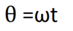

It is a device used to generate electricity. It works on the principle of electromagnetic induction. In this process, the conductor coil (the strongest copper coil on the steel coil) rotates rapidly between the magnetic poles of the horse's shape.
You can use this simulator by following some instruction which are mentioned in the Instruction file for better visualisation...
simulator
The A.C. Generator is consist of four main parts :
A rectangular coil ABCD consist of a large number of turns of copper bound over a soft iron core is called armature. The soft iron core is used to increase the magnetic flux.
It is usually a permanent sponge magnet having concave poles. The armature is rotated of a magnet so that axis of the armature is perpendicular to magnetic field lines.
Slip rings are the magnetic rings which are connected in the terminal of the armature. These rings are rotated with the coil and these are use to draw the current from the generator.
The brushes B1 & B2 are just touch the slip rings. They are not rotating with the coil and these brushes leads to the output of load resistance.
1. The strong magnetic field is produced by a current flow through the field coil of the rotor.
2. The field coil in the rotor receives excitation through the use of slip rings and brushes.
3. Two brushes are spring-held in contact with the slip rings to provide the continuous connection between the field coil and external circuit.
4. The armature is contained within the windings of the stator and is connected to the output.
5. Each time the rotor makes one complete revolution, one complete cycle of AC is developed.
6. A generator has many turns of wire wound into the slots of the rotor
7. The magnitude of AC voltage generated by an AC generator is dependent on the field strength and speed of the rotor.
8. Most generators are operated at a constant speed; therefore, the generated voltage depends on field excitation, or strength.
The conductor coil and its core are known as armature. The arm is connected to the shaft of the machine’s power source like a car and is rotated. The required electrical power can be provided by engines running on fuels such as diesel, petrol, natural gas, etc. Or with renewable energy sources such as wind turbine, water turbine, solar power turbine, etc. As the coil rotates, you cut off the magnetic field that lies between the two magnetic poles. The magnetic field will disrupt the electrons in the conductor to generate the flow of electrical energy within them.
Let position of the coil at any time t. It's make angle θ with vertical. If w is uniform angular speed of the coil.
Then

B be the strength of magnetic field n be the number of turns in the coil and A area of the coil then magnetic flux with the coil in this position is given by :

differentiate w.r.t. time :-
Maximum value of e.m.f. say so ε ͦ
Hence, maximum value of instantaneous e.m.f. in a AC Generator is given by
You can download Instruction for Generator by clicking on button
Generator Instruction